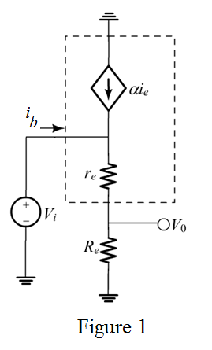

Refer to the Figure P6.99 in the text book.
Draw the small signal model diagram as shown in Figure 1.

Apply Kirchhoff’s voltage law in at input loop in Figure 1.
Substitute for.
Write the expression of input resistance using Figure 1.
Substitute for.
Hence, the expression of input resistance is proved.
Write the expression of output voltage using voltage divider rule.
Hence, the expression of voltage gain is proved.